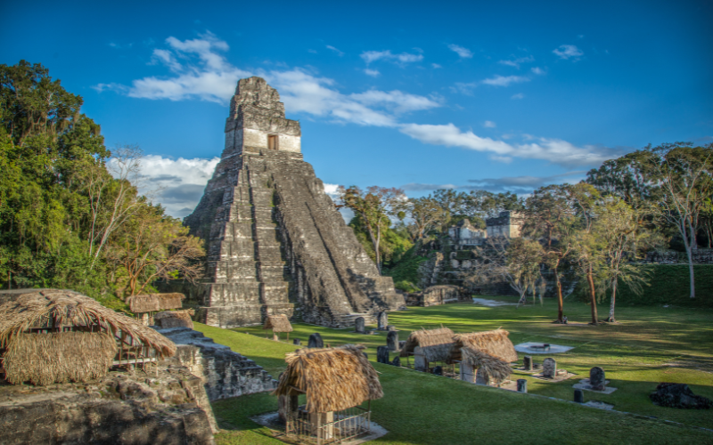
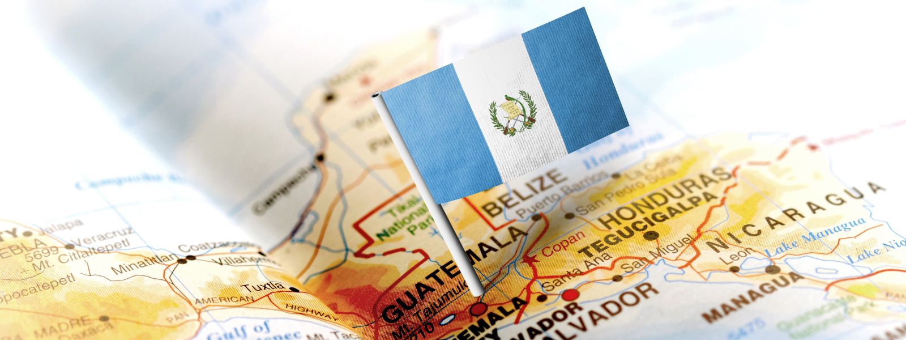
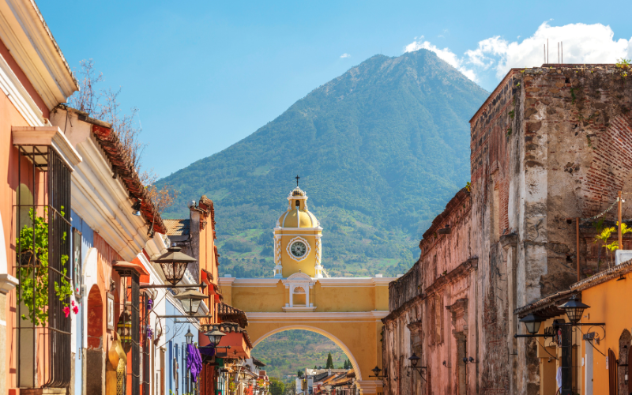
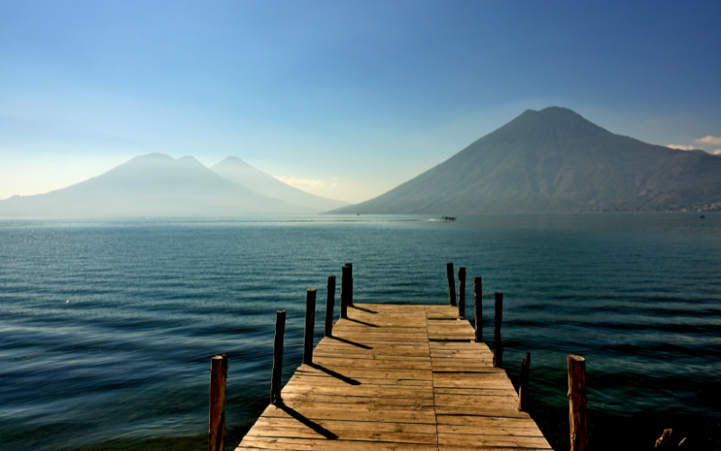

Tikal
Uno de los sitios arqueológicos mayas más importantes de Mesoamérica, ubicado en plena selva del Petén, con templos que superan los 60 metros de altura.
Descubre Guatemala

Explora los destinos más impresionantes de Guatemala, desde volcanes y lagos hasta ciudades coloniales llenas de historia.
Esta guía reúne los lugares imprescindibles para tu próximo viaje.

Uno de los sitios arqueológicos mayas más importantes de Mesoamérica, ubicado en plena selva del Petén, con templos que superan los 60 metros de altura.

Ciudad colonial declarada Patrimonio de la Humanidad por la UNESCO, conocida por sus calles empedradas, iglesias barrocas y el volcán de Agua como telón de fondo.

Rodeado de tres volcanes y pueblos indígenas como Santiago Atitlán y San Pedro La Laguna, es considerado uno de los lagos más hermosos del mundo.